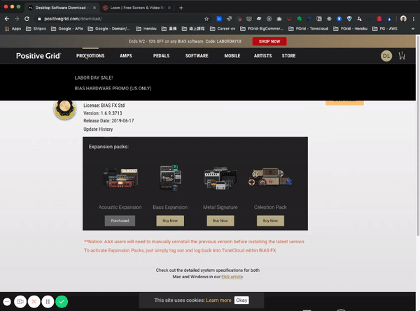

Work Experience @PG
Layout Works
Git Flow
CRM Tools
Product Card
Promotion Bar
Price Dashboard
Price Dashboard
Features
Tech Details
Development Process
Problems
Revised Email Sender
Tech Details
Refractoring Front-End
Refractoring Back-End
Dev-Ops and CI
Different from Price Dashboard
Personal Website as Works
Introduction
Front-End
Back-End
Crawler
Introduction
Refractoring to a well-organized structure.
class: center, middle # Daniel Lin's Portfolio --- ###### Work Experience @PG ### Layout work <p>Build a brand new website for Positive Grid by a ecommerce solution called Bigcommerce.</p> ##### Header <div style="display:inline-block;">  <img style="width:28%;" src="./statics/img/PG/header-mobile.gif" alt="header-mobile"> </div> --- ###### Work Experience @PG ### Layout work ##### Demo Page <div style="display:inline-block;"> <img style="width:78%;" src="./statics/img/PG/demo-resize.gif" alt="demo-resize"> <img style="width:78%;" src="./statics/img/PG/demo-fullpage.png" alt="demo-fullpage"> <img style="width:20%;vertical-align: top;" src="./statics/img/PG/demo-mobile.png" alt="demo-mobile"> </div> --- ###### Work Experience @PG ### Layout work ##### Login Page <img style="width:100%;" src="./statics/img/PG/login.png" alt="login"> --- ###### Work Experience @PG ### Layout work ##### Find A Store/Store Page/ <div style="display:inline-block;"> <img style="width:30%;" src="./statics/img/PG/find-store.png" alt="find-store"> <img style="width:33%;vertical-align: top;" src="./statics/img/PG/store1.jpg" alt="store1"> <div style="width:33%;vertical-align: top;display: inline-block;"> <!-- <img style="width:100%;" src="./statics/img/PG/cart.png" alt="cart"> --> <img style="width:100%;" src="./statics/img/PG/cart-mobile.png" alt="cart-mobile"> </div> </div> --- ###### Work Experience @PG ### Git Flow ##### Situation: <p style="font-size:1rem;margin-bottom:0;"> - Feature development is one per feature. </p> <p style="font-size:1rem;margin-bottom:0;"> - Some features had been developed but never going live until the idea has been approved by marketing team member. </p> <p style="font-size:1rem;margin-bottom:0;"> - Website needs to be updated as fast as possible. </p> <img src="./statics/img/PG/customized-git-workflow.jpg" alt="git-flow"> --- ###### Work Experience @PG ### Git Flow ##### Idea: <p style="font-size:1rem;margin-bottom:0;"> - First step is always checkouting a new branch from master. </p> <p style="font-size:1rem;margin-bottom:0;"> - Before merge feaute into stage/prod, must run rebase prod first </p> <img src="./statics/img/PG/customized-git-workflow.jpg" alt="git-flow"> --- ###### Work Experience @PG ### CRM Tools <img style="width:100%;" src="./statics/img/PG/crm.gif" alt="crm"> --- ###### Work Experience @PG ### Product Card <div style="display:inline-block;text-align: center;"> <img style="width:69%;" src="./statics/img/PG/product-card-old.png" alt="product-card-old"> <img style="width:69%;vertical-align: top;" src="./statics/img/PG/product-card.png" alt="product-card"> </div> --- ###### Work Experience @PG ### Promotion Bar ##### Dynamic render: A marketing member can access BC backstage and just edit some imperative text and click save, then the promotion bar will be up-to-date without additional depolyment. <div> <img style="width:100%;" src="./statics/img/PG/promotion-bar.png" alt="promotion-bar"> </div> --- ###### Work Experience @PG ### Price Dashboard Marketing team needs a tool that can monitor and quickly set and update company's product price during every promotion era. ###### I draw this sketch: <div> <img style="width:100%;" src="./statics/img/PG/price-dashboard-mockup.png" alt="price-dashboard-mockup"> </div> --- ###### Price Dashboard [[source]](https://github.com/DanielLin9406/fullstack-priceDashboard) ### Features --- ###### Price Dashboard [[source]](https://github.com/DanielLin9406/fullstack-priceDashboard) ### Tech Details --- ###### Price Dashboard [[source]](https://github.com/DanielLin9406/fullstack-priceDashboard) ### Development Process --- ###### Price Dashboard [[source]](https://github.com/DanielLin9406/fullstack-priceDashboard) ### Problems --- ###### Revised Email Sender [[source]](https://github.com/DanielLin9406/fullstack-emailSender-upgraded) ### Tech Details --- ###### Revised Email Sender [[source]](https://github.com/DanielLin9406/fullstack-emailSender-upgraded) ### Refractoring Front-End --- ###### Revised Email Sender [[source]](https://github.com/DanielLin9406/fullstack-emailSender-upgraded) ### Refractoring Back-End --- ###### Revised Email Sender [[source]](https://github.com/DanielLin9406/fullstack-emailSender-upgraded) ### Dev-Ops and CI --- ###### Revised Email Sender [[source]](https://github.com/DanielLin9406/fullstack-emailSender-upgraded) ### Different from Price Dashboard --- ###### Revised Email Sender [[source]](https://github.com/DanielLin9406/fullstack-emailSender-upgraded) ### Different from Price Dashboard --- ###### Personal Website [[source]](https://github.com/DanielLin9406/frontend-mixDanStudio) ### Introduction --- ###### Personal Website [[source]](https://github.com/DanielLin9406/frontend-mixDanStudio) ### Front-End --- ###### Personal Website [[source]](https://github.com/DanielLin9406/frontend-mixDanStudio) ### Back-End --- ###### Crawler [[source]](https://github.com/DanielLin9406/crawler-python-voicetube) ### Introduction --- ###### Crawler [[source]](https://github.com/DanielLin9406/crawler-python-voicetube) ### Refractoring to a well-organized structure --- <div style="display: flex;justify-content: center;align-items: center;height: 100%;"> <h2 style="text-align: center;">Thank you!!!!!!</h2> </div>